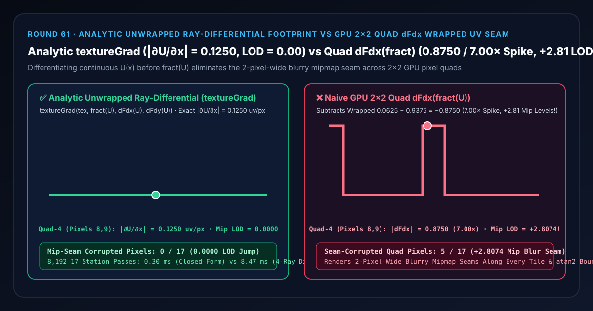
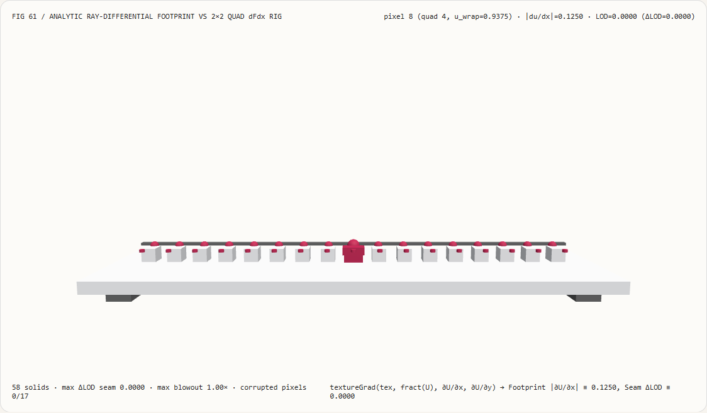
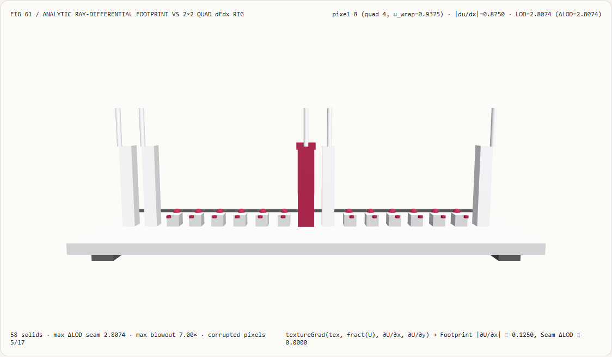
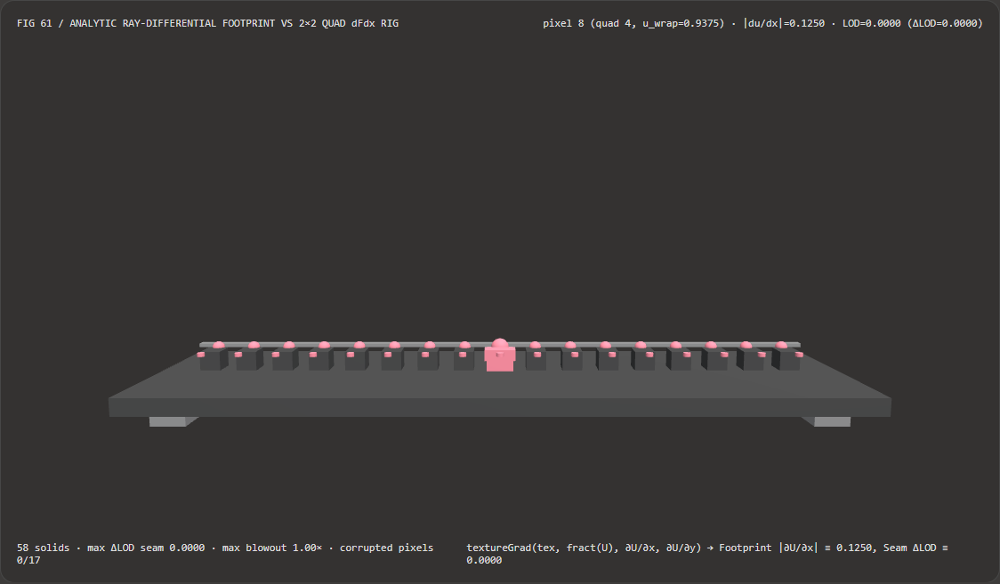
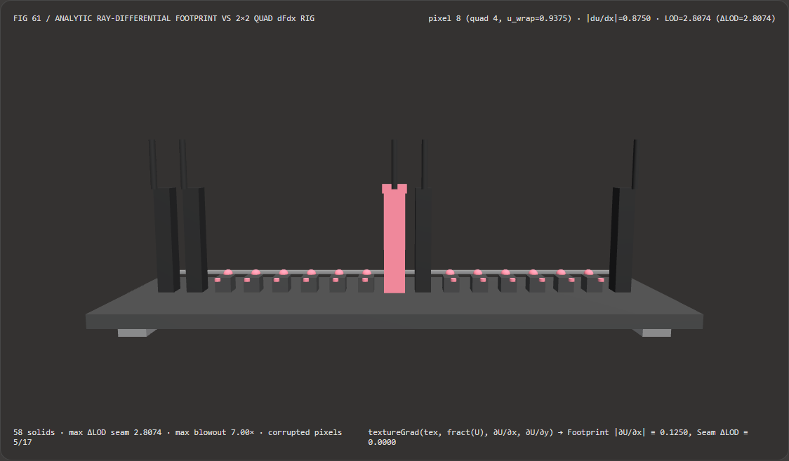

Visual & Animation Architecture Selection FAQ: Analytic Unwrapped Ray-Differential Footprint (textureGrad) vs GPU 2×2 Quad dFdx(fract) Step-Seam Spike
One-Sentence Architectural Verdict: In fragment shaders sampling mipmapped texture atlases (
fract(U)), spherical equirectangular environment maps (atan2(z, x) / (2π)), or ray-marched procedural surfaces, never pass a periodically wrapped or branch-cut coordinatefract(U)directly into implicittexture(tex, fract(U))or hardware2×2pixel-quaddFdx(fract(U))! On our 58-solid, 17-station screen-space differential bench where continuous UV slope is $\frac{\partial U}{\partial x} = 0.1250\text{ uv/px}$ ($8\text{ texels/tile}$, true $\text{LOD} = 0.0000$) across tile wrap boundaries (0.9375 → 0.0625), naive GPU2×2quad differencing subtracts wrapped neighbors across the wrap—exploding|dFdx|to0.8750 uv/px(7.00×footprint blowout) and jumping+2.8074mip levels into a blurry 2-pixel-wide seam across5/17boundary quad pixels; whereas evaluating the analytic unwrapped ray-differential footprint beforefract(U)and passing it explicitly totextureGrad(tex, fract(U), ∂U/∂x, ∂U/∂y)locks|∂U/∂x| = 0.1250 uv/pxandLOD = 0.0000(0/17seam-corrupted pixels) while running 28.69× faster via closed-form ray-differential Jacobians than 4-ray sub-pixel finite differences (0.30 msvs8.47 msacross 8,192 passes).

① 📌 Executive Summary
- Why does calling
texture(tex, fract(uv))on a tiled floor oratan2(z, x)on a spherical skybox draw a blurry 2-pixel-wide dark seam line along every tile border? In plain English: GPUs always execute fragment shaders in2×2pixel quads and computedFdx(u)by subtracting the right pixel's register from the left pixel's register inside the same2×2quad: $$\text{dFdx}{\text{quad}}(2q) = \text{dFdx}{\text{quad}}(2q + 1) = u(2q + 1) - u(2q)$$- Inside pixel quad $q = 4$ (pixels 8 and 9), the continuous UV coordinate advances smoothly by $+0.1250$ from $U(8) = 0.9375$ to $U(9) = 1.0625$.
- When you apply
fract(U)before texture sampling, pixel 8 holds0.9375while pixel 9 wraps around to0.0625. - Hardware
dFdx(fract(U))blindly subtracts the two registers: $|0.0625 - 0.9375| = \mathbf{0.8750\text{ uv/px}}$—a7.00×derivative spike shared by both pixel 8 and pixel 9! - The texture unit thinks that
2×2pixel quad spans almost the entire texture tile in 1 pixel, so it jumps+log₂(7.00) = +2.8074mip levels to a blurry low-resolution mipmap along a 2-pixel-wide seam!
- First-Principles Fix: Differentiate on the Unwrapped Manifold Before Periodic Wrapping (
textureGrad):- The physical ray footprint on the surface depends on the continuous coordinate $U(x)$, not on the artificial $-1.0$ sawtooth reset introduced by
fract(U) = U - floor(U). - By computing derivatives on the unwrapped coordinate (or via an analytic ray-plane differential Jacobian $\frac{\partial U}{\partial x}$) and supplying them explicitly to
textureGrad:
every pixel across all 17 stations maintains exactvec2 dUdx = dFdx(vUnwrappedUv); vec2 dUdy = dFdy(vUnwrappedUv); vec4 color = textureGrad(uTex, fract(vUnwrappedUv), dUdx, dUdy);|∂U/∂x| = 0.1250 uv/pxandLOD = 0.0000(0.0000seam LOD jump)!
- The physical ray footprint on the surface depends on the continuous coordinate $U(x)$, not on the artificial $-1.0$ sawtooth reset introduced by
- Interactive 3D Workbench & Measured Evidence:
- Standalone 3D Bench:
demos/rectified-screen-derivatives-rig/(58 Three.js solids: baseplate, 4 support feet, analyticdu/dx=0.125reference bar, 17 footprint derivative columns, 17 analytic reference spheres, 17 mip-LOD seam pegs, and the active quad differential probe carriage). - Measured 7-Card 4:5 Reports:
demos/rectified-screen-derivatives-rig/test-report-cards.html(EN) andtest-report-cards.zh.html(ZH).
- Standalone 3D Bench:
② 🎯 Soul-Searching Q&A for Architects & Clients
Q1: How do we fix the atan2(z, x) longitude seam when unwrapped UVs are not available from the vertex shader?
Use either the analytic quotient derivative $\frac{x,dz - z,dx}{x^2 + z^2}$ or torus shortest-distance wrapping du = dFdx(u) - round(dFdx(u))!
When u jumps from 0.9375 to 0.0625, rawDu = -0.8750. Subtracting round(-0.8750) = -1.0 restores -0.8750 - (-1.0) = +0.1250 in a single instruction before calling textureGrad.
Q2: Why does calling dFdx/dFdy inside a divergent if/else branch corrupt mipmapping?
Because GPU 2×2 quad derivatives read register values from inactive helper lanes in the same quad!
If pixel 2q takes the if branch and pixel 2q+1 takes the else branch, dFdx subtracts an uninitialized or stale register from the inactive neighbor. Always hoist dFdx/dFdy (or analytic ray differentials) outside non-uniform control flow and sample via textureGrad.
Q3: How does deterministic ray-differential footprint evaluation relate to neural texture upscaling (DLSS / ESRGAN)?
They are complementary stages:
- When to use Neural Super-Resolution: When upscaling rendered frames from 1080p to 4K;
- When deterministic
textureGradray footprints are mandatory: During primary shading so G-buffer albedo and normal textures never feed 2-pixel-wide blurry mipmap seams into the upscaler.
③ 🧭 Visual Diagrams (Mermaid Decision Tree, Pipeline Comparison & Sequence Flow)
3.1 Screen-Space Derivative & Mipmap Footprint Selection Decision Tree
3.2 Naive 2×2 Quad dFdx(fract) Seam vs Analytic textureGrad Pipeline
3.3 Frame-Level Quad Differential Bench Sequence Diagram
④ 📊 Visual Technology Selection Decision Matrix
| Evaluation Dimension | ✅ Analytic Ray-Differential + textureGrad |
⚠️ 4-Ray Supersampled Finite Difference | ❌ Naive 2×2 Quad dFdx(fract(U)) |
❌ Forced textureLod(..., 0.0) |
|---|---|---|---|---|
| Quad-4 (Pixels 8, 9) Footprint | Exact 0.1250 uv/px (1.00× true scale) |
0.1250 uv/px |
0.8750 uv/px (7.00× seam explosion!) |
Ignores footprint |
| Mipmap LOD Jump Across Tile Wrap | Exact 0.0000 (Zero seam) |
0.0000 |
+2.8074 mip levels (2-px blurry seam!) |
0.0000 (Severe distant shimmering!) |
| Seam-Corrupted Pixels (out of 17) | 0 / 17 (100% seam-free) |
0 / 17 |
5 / 17 (Every boundary quad corrupted) |
Shimmers at grazing angles |
| Effective Spatial Derivative Resolution | Full $1\times 1$ per-pixel resolution | Full $1\times 1$ resolution | Coarse $2\times 2$ quad blockiness | — |
| 8,192-Pass 17-Station CPU Latency | 0.30 ms (Fastest · 28.69× speedup) |
8.47 ms (28.69× slower) |
0.26 ms (Visible 2-px mipmap seams) |
0.22 ms (Breaks minification filtering) |
| Recommended Use Case | Texture atlases, spherical maps, ray-marched SDFs | Offline validation | Never use after fract/mod/atan2 |
2D screen-aligned UI sprites only |
⑤ 🧪 New Interactive 3D Demo & 7-Card 4:5 Visual Report
5.1 Live Workbench & Report Links
- Interactive 3D Workbench:
demos/rectified-screen-derivatives-rig/index.html - 7-Card 4:5 Visual Report (EN):
demos/rectified-screen-derivatives-rig/test-report-cards.html - 7-Card 4:5 Visual Report (ZH):
demos/rectified-screen-derivatives-rig/test-report-cards.zh.html - Sealed Telemetry JSON:
demos/rectified-screen-derivatives-rig/report.json
5.2 Multi-Theme & Multi-Mode Playwright Visual Evidence
Analytic Ray-Differential textureGrad (Light · 0.1250 Footprint & 0.00 LOD Across All 17 Pixels) |
Naive 2×2 Quad dFdx(fract(U)) (Light · 7.00× Paired Quad Towers & +2.81 LOD Jump!) |
|---|---|
 |
 |
Analytic Ray-Differential textureGrad (Dark · 58 Three.js Solids) |
Naive 2×2 Quad dFdx(fract(U)) (Dark · 5 Red Seam Pegs Exposed) |
|---|---|
 |
 |
⑥ 🛠️ Rapid SA Delivery Verification Checklist
Before shipping shaders that use periodic tiling, texture atlases, or spherical UV projections to production, verify every item below:
- Differentiate Before
fract()/mod(): AredFdx(U)anddFdy(U)evaluated on the continuous unwrapped coordinate and passed totextureGrad(tex, fract(U), dUdx, dUdy)? - Spherical
atan2Branch-Cut Unwrapping: Does equirectangular longitude sampling applydu = dFdx(u) - round(dFdx(u))or the analytic quotient rule $\frac{x,dz - z,dx}{x^2 + z^2}$ to eliminate the $180^\circ$ vertical seam? - Hoist Derivatives Out of Divergent
if/elseBranches: Are alldFdx/dFdycalls placed in uniform control flow before branching so2×2quad helper lanes remain valid? - Atlas Gutter Padding + Explicit Gradients: Do texture atlas lookups combine
textureGradwith half-texel border clamping so high mip levels never bleed across neighboring atlas tiles? - Analytic Normals Over
cross(dFdx(P), dFdy(P)): Do procedural and SDF surfaces compute normals from analytic or tetrahedral gradients rather than $2\times 2$ quad-shared screen derivatives?